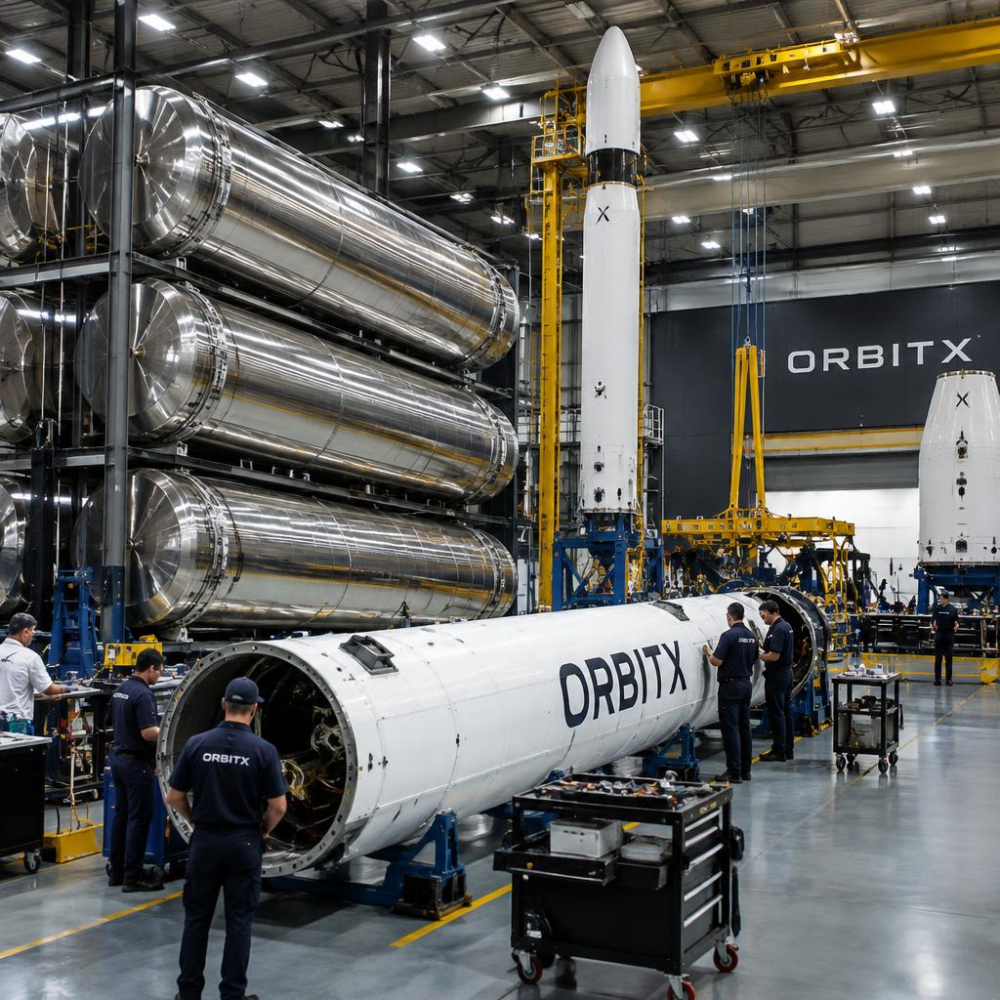
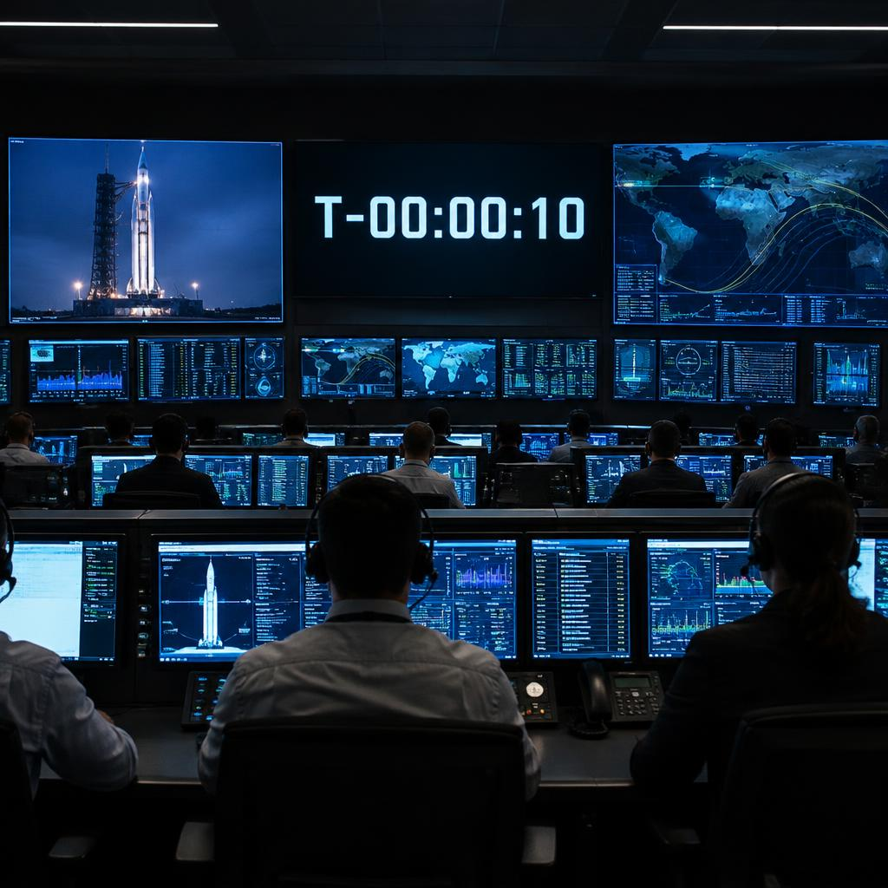
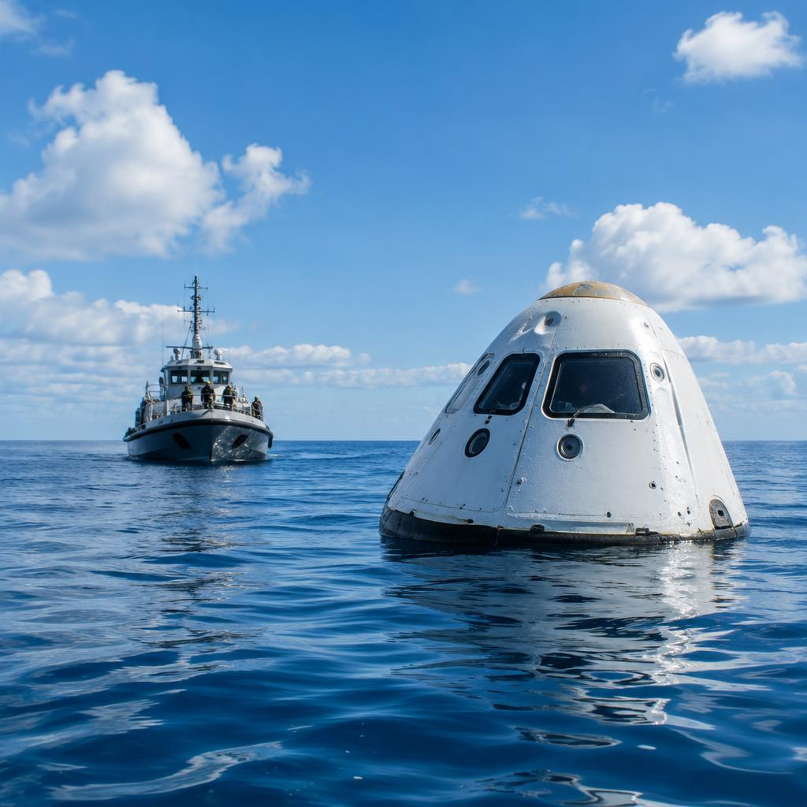

About
Company
OrbitX exists to make spaceflight routine — and to spend the savings making humans multiplanetary.

Vertically integrated, deliberately
Around 80% of every OrbitX vehicle is manufactured in-house: tanks are welded, engines machined, avionics boards populated and seats sewn inside our own factories. That is unusual, and it is the strategy: a supplier prices a part for one sale; we price ours for a fleet that flies weekly.
Vertical integration also shortens the feedback loop. When a test stand finds a weak weld, the welding team is a corridor away — fixes land in weeks, not contract cycles.

Engines are the product
Every OrbitX vehicle runs on engines from one family — the VX-9 for atmospheric flight and the VX-9V for vacuum, with the full-flow staged-combustion VX-Raptor below Nova. One engine family means one test infrastructure, one supply chain and crews that know every quirk of every engine they fly.
Our test stands fire an engine every working day. Development is iterative: engines that come back from flights are torn down, measured, and the fleet learns from every unit ever flown.

Flight computers and software
Each vehicle flies with triple-redundant flight computers that vote on every decision; if one processor disagrees with the other two, it is outvoted mid-flight. Guidance, navigation and engine control run on our own flight software, written and tested in-house against hardware-in-the-loop simulators that fly every mission before the rocket does.
The same discipline runs mission control: every console is staffed by engineers who built the system they monitor, and every flight ends with a review whose findings feed the next vehicle.

The recovery fleet
Reuse does not end at touchdown. Recovery ships patrol landing zones for droneships, capsule parachutes and fairing halves; a dedicated fleet brings hardware back to port within hours.
At the hangar, returned boosters are inspected, engines are bench-fired, and flight-proven hardware is recertified for the next mission. Turnaround time — days between a booster landing and its next launch — is the metric the whole company watches, because it is the number that keeps getting smaller.
Watch a launch